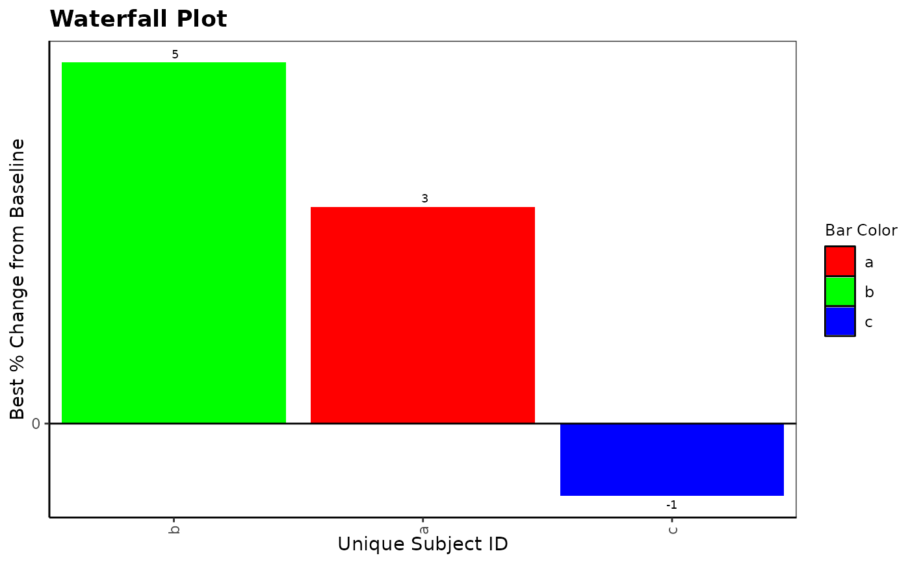
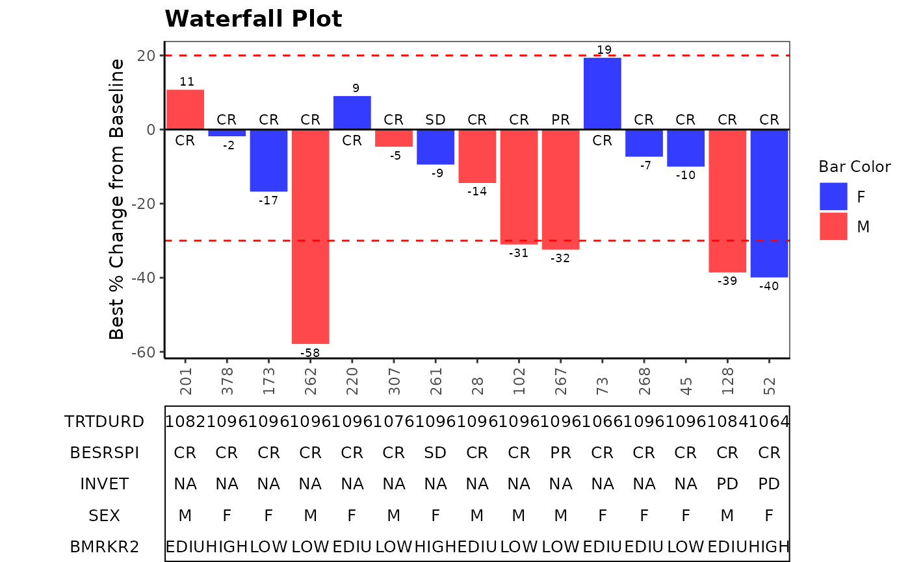
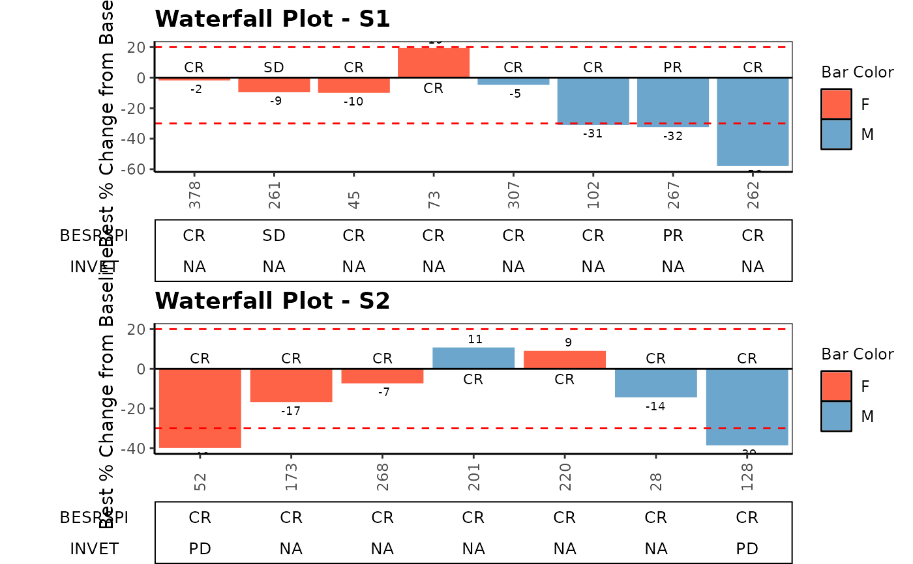
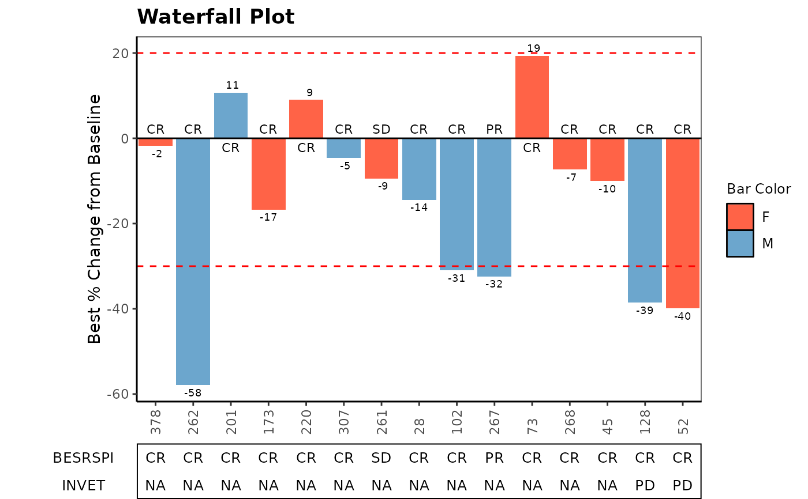

Waterfall plot is often used in Early Development (ED) to present each individual patient’s best response to a particular drug based on a parameter.
Usage
g_waterfall(
bar_id,
bar_height,
sort_by = NULL,
col_by = NULL,
bar_color_opt = NULL,
anno_txt = NULL,
href_line = NULL,
facet_by = NULL,
show_datavalue = TRUE,
add_label = NULL,
gap_point = NULL,
ytick_at = 20,
y_label = "Best % Change from Baseline",
title = "Waterfall Plot"
)Arguments
- bar_id
(
vector)
contains IDs to identify each bar- bar_height
numeric vector to be plotted as height of each bar
- sort_by
(
vector)
used to sort bars, default isNULLin which case bars are ordered by decreasing height- col_by
(
vector)
used to color bars, default isNULLin which case bar_id is taken if the argumentbar_color_optis provided- bar_color_opt
(
vector)
aesthetic values to map color values (named vector to map color values to each name). If notNULL, please make sure this contains all possible values forcol_byvalues, otherwise defaultggplotcolor will be assigned, please note thatNULLneeds to be specified in this case- anno_txt
(
dataframe)
contains subject-level variables to be displayed as annotation below the waterfall plot, default isNULL- href_line
(
numeric vector)
to plot horizontal reference lines, default isNULL- facet_by
(
vector)
to facet plot and annotation table, default isNULL- show_datavalue
(
boolean)
controls whether value of bar height is shown, default isTRUE- add_label
(
vector)
of one subject-level variable to be added to each bar except for bar_height, default isNULL- gap_point
(
numeric)
value for adding bar break when some bars are significantly higher than others, default isNULL- ytick_at
(
numeric)
optional bar height axis interval, default is 20- y_label
(
string)
label for bar height axis, default is "Best % Change from Baseline"- title
(
string)
displayed as plot title, default is "Waterfall Plot"
Examples
library(tidyr)
library(dplyr)
library(nestcolor)
g_waterfall(
bar_id = letters[1:3], bar_height = c(3, 5, -1),
bar_color_opt = c("red", "green", "blue")
)

# Example 1
ADSL <- osprey::rADSL[1:15, ]
ADRS <- osprey::rADRS %>%
filter(USUBJID %in% ADSL$USUBJID)
ADTR <- osprey::rADTR %>%
filter(USUBJID %in% ADSL$USUBJID) %>%
select(USUBJID, PCHG) %>%
group_by(USUBJID) %>%
slice(which.min(PCHG))
TR_SL <- inner_join(ADSL, ADTR, by = "USUBJID", multiple = "all")
SUB_ADRS <- ADRS %>%
filter(PARAMCD == "BESRSPI" | PARAMCD == "INVET") %>%
select(USUBJID, PARAMCD, AVALC, AVISIT, ADY) %>%
spread(PARAMCD, AVALC)
ANL <- TR_SL %>%
left_join(SUB_ADRS, by = "USUBJID", multiple = "all") %>%
mutate(TRTDURD = as.integer(TRTEDTM - TRTSDTM) + 1)
anno_txt_vars <- c("TRTDURD", "BESRSPI", "INVET", "SEX", "BMRKR2")
g_waterfall(
bar_height = ANL$PCHG,
bar_id = sub(".*-", "", ANL$USUBJID),
col_by = ANL$SEX,
sort_by = ANL$ARM,
# bar_color_opt = c("F" = "red", "M" = "green", "U" = "blue"),
anno_txt = ANL[, anno_txt_vars],
facet_by = NULL,
href_line = c(-30, 20),
add_label = ANL$BESRSPI,
ytick_at = 20,
gap_point = NULL,
show_datavalue = TRUE,
y_label = "Best % Change from Baseline",
title = "Waterfall Plot"
)

# Example 2 facetting
anno_txt_vars <- c("BESRSPI", "INVET")
g_waterfall(
bar_id = sub(".*-", "", ANL$USUBJID),
bar_height = ANL$PCHG,
sort_by = ANL$COUNTRY,
col_by = ANL$SEX,
bar_color_opt = c("F" = "tomato", "M" = "skyblue3", "U" = "darkgreen"),
anno_txt = ANL[, anno_txt_vars],
facet_by = ANL$STRATA2,
href_line = c(-30, 20),
add_label = ANL$BESRSPI,
ytick_at = 20,
gap_point = 260,
y_label = "Best % Change from Baseline",
title = "Waterfall Plot"
)

# Example 3 extreme value
ANL$PCHG[3] <- 99
ANL$PCHG[5] <- 199
ANL$PCHG[7] <- 599
ANL$BESRSPI[3] <- "PD"
ANL$BESRSPI[5] <- "PD"
ANL$BESRSPI[7] <- "PD"
g_waterfall(
bar_id = sub(".*-", "", ANL$USUBJID),
bar_height = ANL$PCHG,
sort_by = ANL$ARM,
col_by = ANL$SEX,
bar_color_opt = c("F" = "tomato", "M" = "skyblue3", "U" = "darkgreen"),
anno_txt = ANL[, anno_txt_vars],
facet_by = NULL,
href_line = c(-30, 20),
add_label = ANL$BESRSPI,
ytick_at = 20,
gap_point = 260,
y_label = "Best % Change from Baseline",
title = "Waterfall Plot"
)
